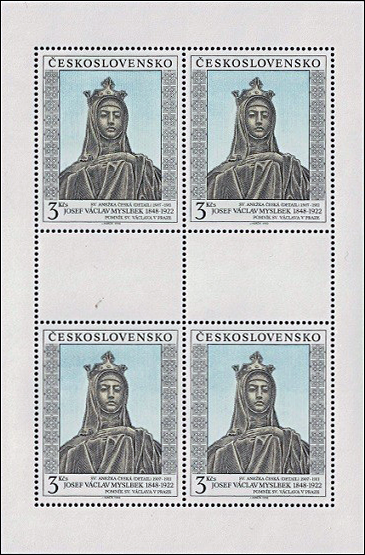
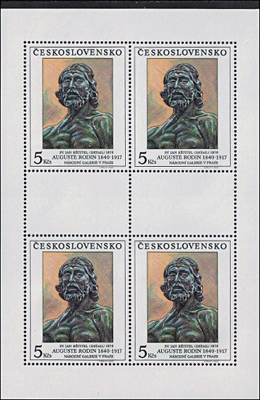
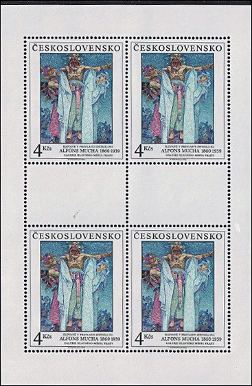
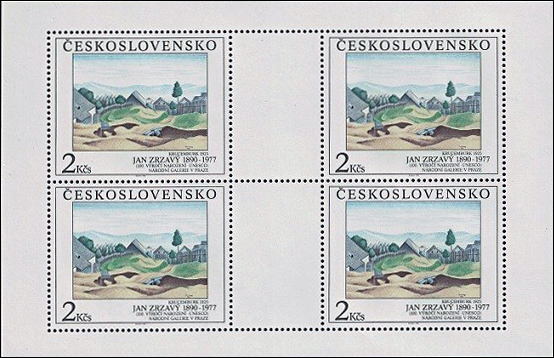
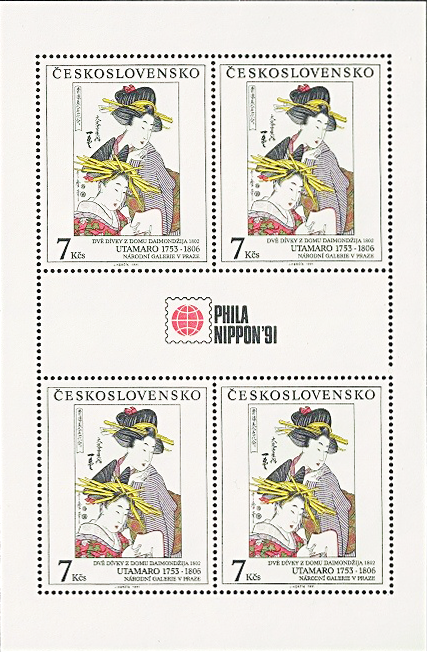
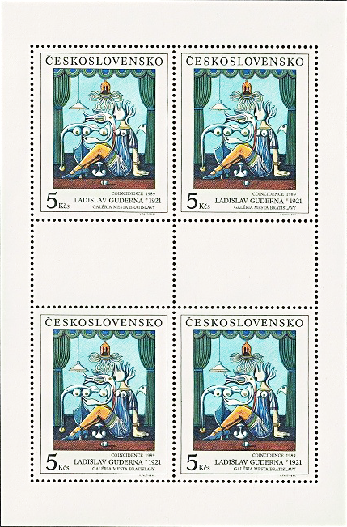
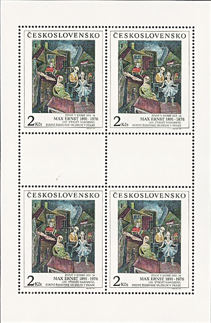
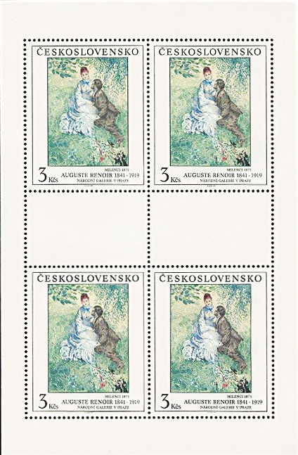

Czechoslovakia – Engraved Art Stamps, 1990–1991
Portraits, landscapes and the human figure. The beauty of these miniature reproductions lies in their interplay of fine engraved lines, colour and carefully balanced compositions. The original margins and perforations are preserved in the illustrations.
Explore the exhibition: 1984–1986 · 1988–1989 · 1990–1991
1990
Portraits and sculptural forms appear alongside a colourful figurative work and a broad landscape. The horizontal landscape sheet contrasts with the tall format of the other three.
Josef Václav Myslbek (1848–1922)
A central figure in Czech sculpture, Myslbek created monumental works including the equestrian statue of Saint Wenceslas in Prague. The engraved image translates sculptural volume into lines and tones.


Auguste Rodin (1840–1917)
The French sculptor transformed modern sculpture through expressive modelling. The engraved portrait-like image conveys the textured surface and strong silhouette of the original sculpture.


Alfons Mucha (1860–1939)
A celebrated Czech artist of Art Nouveau, Mucha was known for decorative compositions and elegant figures. The vertical forms and ornamental colour are especially striking here.


Jan Zrzavý (1890–1977)
A Czech modernist painter, Zrzavý developed a poetic language of simplified forms. The landscape is organized into gently undulating shapes and restrained colours.


1991
Four sheets display distinct approaches to the human figure, from delicate outlines and pale colours to richer, darker compositions. One sheet also carries a printed emblem in its central margin.
Kitagawa Utamaro (c. 1753–1806)
The Japanese ukiyo-e master was celebrated for his depictions of women. The elegant contours and patterned clothing demonstrate the affinity between woodblock art and finely engraved stamps.


Ladislav Guderna (1921–1999)
A Slovak painter and graphic artist associated with surrealism, Guderna created imaginative worlds through unexpected combinations of forms. The turquoise ground intensifies the unusual composition.


Max Ernst (1891–1976)
A pioneer of Dada and Surrealism, Ernst experimented with collage and unconventional image-making. The juxtaposition of forms invites imaginative interpretation.


Pierre-Auguste Renoir (1841–1919)
A major French Impressionist, Renoir was celebrated for luminous colour and figure painting. The soft green surroundings and delicate figure show the challenge of translating painterly effects into stamp engraving.


Explore the exhibition
1984–1986 · 1988–1989 · 1990–1991 · Countries
Published November 28, 2026 · Victor Manta, USA. Issue years follow the supplied image filenames; individual artwork and engraver attributions are not asserted where unverified.